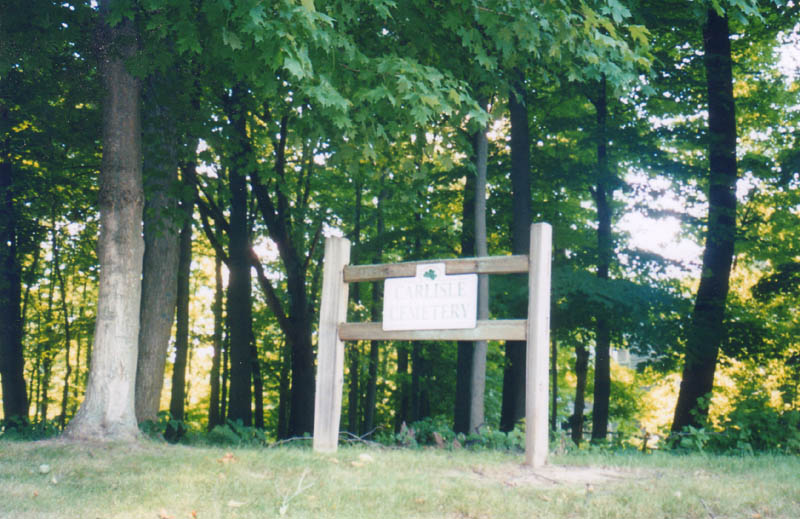
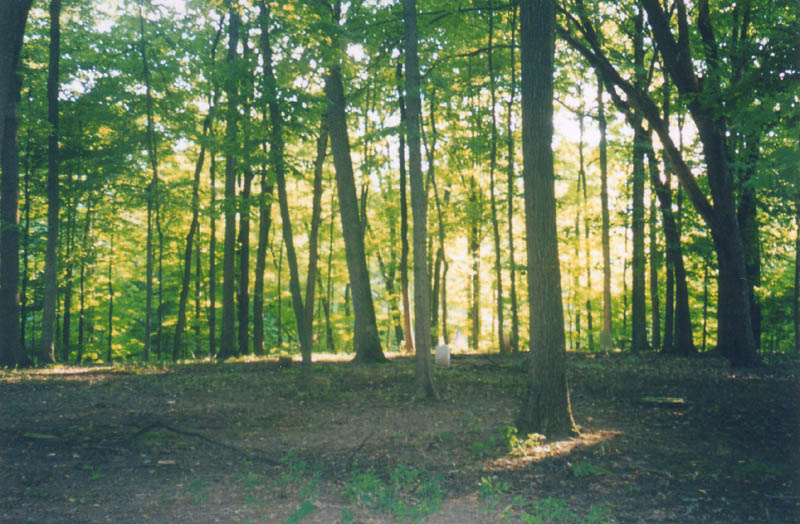
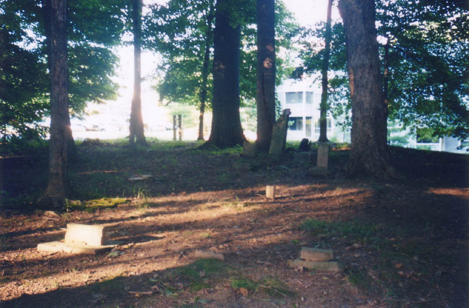
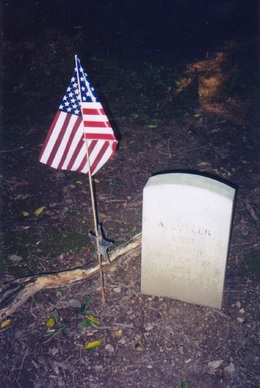
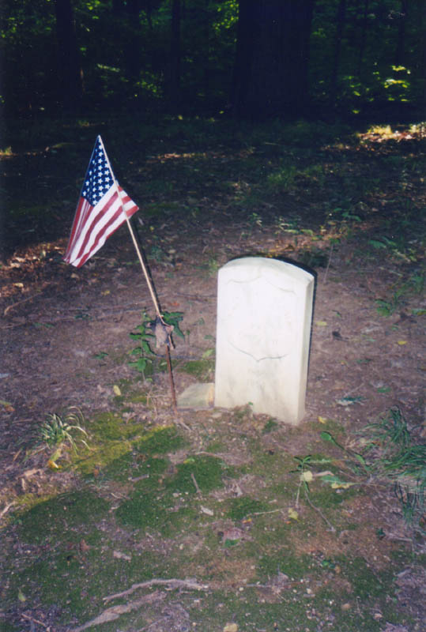
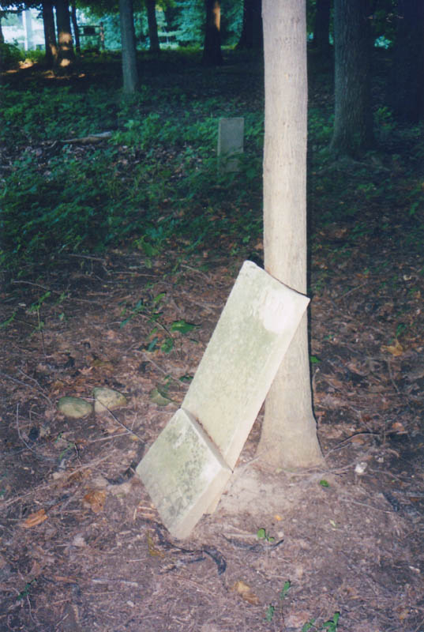

Carlisle Cemetery is hidden deep within Hibernia, an apartment complex which occupies the same spot as a Franklin County ghost town of the same name. The management pays some attention to the decrepit little graveyard; there's a decorative fence along the street side, as well as a wooden sign giving its name.

Beyond that, however, not much has been done to restore or maintain Carlisle. A lot of the stones are broken stubs. Pieces of others are piled or leaned against trees. The whole thing is located beneath a high canopy of trees, which makes it dark and shady in the cemetery on even the brightest of days.


As you know if you read about Hibernia on my site, there was once a town here. I'm not certain about this, but it certainly stands to reason that the occupants of Carlisle Cemetery were once occupants of Hibernia, Ohio. The oldest stone dates from 1810, and the most recent was put there in 1877. Hibernia was established in the 1840s.

. . . . .

The similar-looking gravestones pictured above are ones that somebody still pays attention to, with their Memorial Day flags still freshly planted nearby. A number of veterans from the War of 1812 and the Civil War are buried here; it's nice to know they're not forgotten by the VFW or the DAR.

Other than the restored military graves, not many of the stones at Carlisle are even remotely legible. Maybe if you did a few rubbings you'd learn more about the people who lived in this area 150 years ago.

If you'd like to view what's left of Carlisle for yourself, take the main road through Hibernia, all the way to the very back of the complex. The cemetery is on the left before you reach the parking lot at the very back.
Hibernia, Ohio
Rootsweb: Carlisle Cemetery
Back
Sources
Helwig, Richard M. Ohio Ghost Towns No. 53: Franklin County. Galena, OH: The Center for Ghost Town Research in Ohio, 1988.